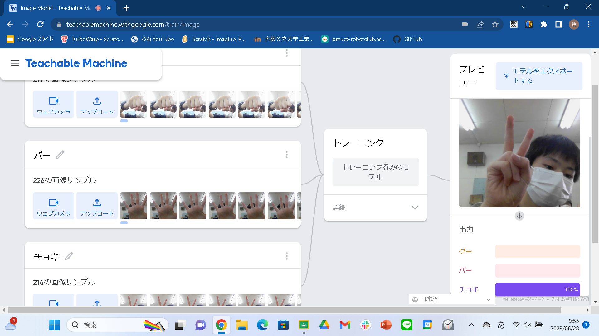
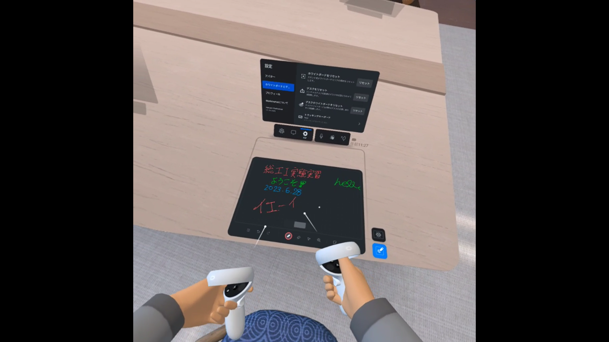

第2週目
2-1 １週目のレポートをHTMLで作る
１週目のレポート
1.内容
GitHubを使って、レポートを作る。
2.感想
ホームページを作った時と同じように自分でプログラムを書けるようになりたいと思いました。また、「～.png」の写真をGitHubにアップロードし、HTMLに写真を貼る方法を知り、「～.png」以外のファイルも貼り付けることができるようにしていきたいと思いました。
2-2 機械学習体験

1.内容
teachable machineを使って、カメラを使った機械学習をし、グー、チョキ、パーの判別を行った。
2.感想
私は、機械学習について、「これがグーで、チョキで、パーだ。」とteachable machineに教え込むことで、ディープラーニングを行わずに、カメラからの映像で、グー、チョキ、パーを楽判別することができることを知り、素晴らしい技術だなと思いました。また、より正確に判別できるように、与える画像の量を増やしてみようと思いました。
2-3 VR（バーチャルリアリティー：Virtual Reality）会議室の体験

1.内容
VRゴーグルを使用し、workroomsを使用し、VR体験を行う。
2.感想
私は、VR体験をして、離れていても、同じ場所で作業しているようにすることができることを知って、コミュニケーションを取るのにとても便利で、これから使っていく人が増えるだろうと思いました。